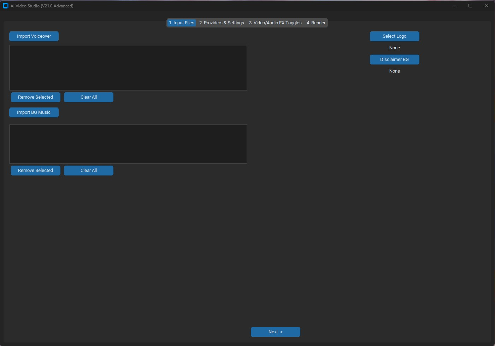
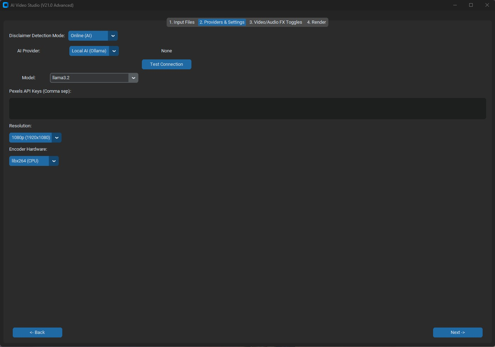
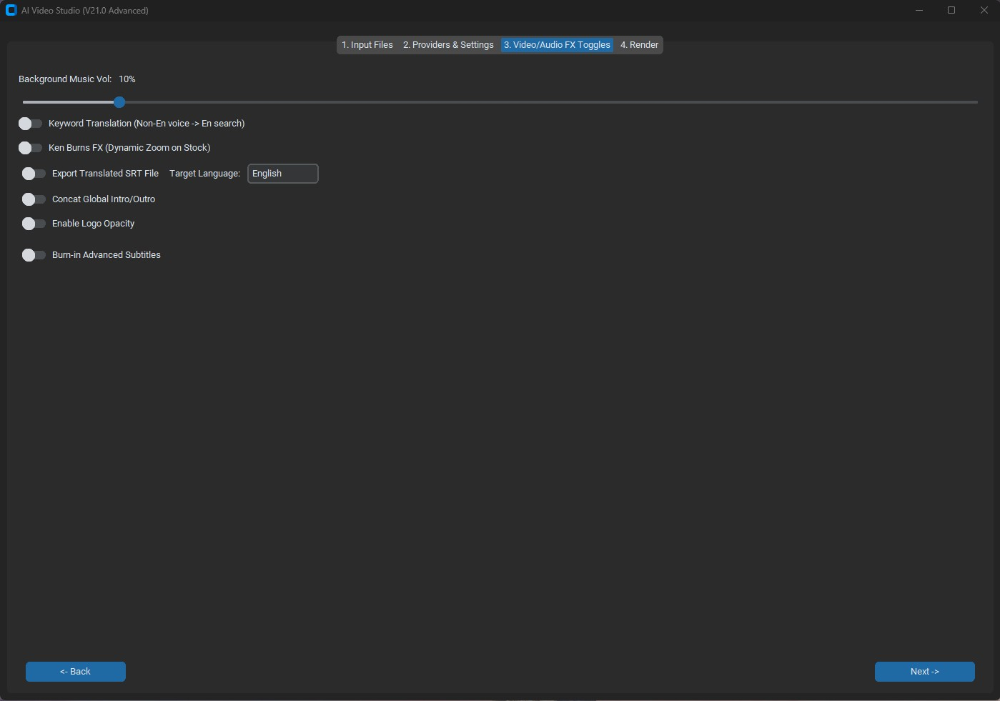
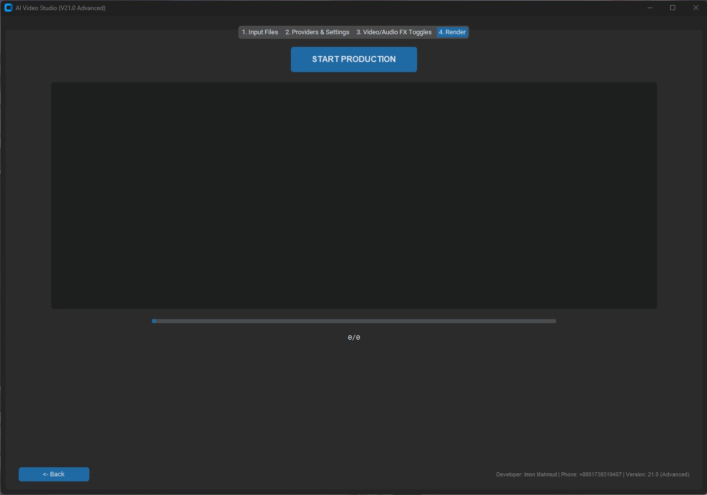

1. Executive Overview
AI Video Studio (V21.0 Advanced) is an automated system designed to eliminate manual video editing operations. Built using decoupled object-oriented Python architectures, it converts continuous multitrack audio arrays and localized transcription files into ready-to-publish video assets. The script features high tolerance parameters for network failures and local device constraints, running safely under load across enterprise server environments or standalone administrative workstations.
✔ For Technical Recruiters & Engineers
Demonstrates production-grade competency in asynchronous thread orchestration, granular exception tracking pipelines, OS subprocess isolation layers, and dynamic GPU driver monitoring compliant with strict global security and performance benchmarks.
★ Public Open-Source Tool
A turn-key open-source digital asset that eliminates production costs by executing continuous automated asset compilation locally on existing hardware pools, bypassing expensive recurring cloud computing bills completely.
2. System Architecture & Data Pipeline
The processing infrastructure manages transitional pipelines asynchronously. Graphical layout states transfer instructions into thread-safe worker pools without slowing window render times, guaranteeing fluid control environments during complex video composition tasks.
CustomTkinter Async GUI
ThreadPoolExecutor Managed
Local Whisper / Cloud LLM
Video Master Artifact
FFmpeg H.264 NVENC/AMF
Audio, SRT, Watermarks
Figure 1: Full-duplex asynchronous compilation and hardware-accelerated encoding execution flow.
3. Technical Capabilities & Cross-OS Logic
The source architecture implements structural operating system adaptors to achieve absolute multi-platform stability. Rather than tracking rigid folder targets, the environment utilizes runtime verification functions to coordinate local system binary links fluidly on both Linux distributions and Windows workstations.
// Subprocess Window Sandboxing (Windows Environment Fix)
if os.name == 'nt':
_original_popen = subprocess.Popen
class NoWindowPopen(_original_popen):
def __init__(self, *args, **kwargs):
if 'creationflags' not in kwargs:
kwargs['creationflags'] = 0x08000000 # CREATE_NO_WINDOW
super().__init__(*args, **kwargs)
subprocess.Popen = NoWindowPopen
Granular Subsystem Implementations
os.chmod) on Linux environments to safely enable local execution flags, while running clean directory mapping queries across Windows configurations via os.path libraries seamlessly.
HTTPAdapter retry pooling via urllib3 to gracefully isolate transient network timeouts, automated asset token drops, and stock provider API status exceptions automatically.
h264_nvenc, AMD h264_amf, Intel h264_qsv), falling back smoothly to CPU limits if VRAM pools are absent.
shutil.rmtree on completion to prevent target machine storage leakage.
4. Hardware Configuration & Runtime Requirements
To ensure rapid local video encoding operations and real-time OpenAI Whisper model initialization stability, the executing system architecture should meet or exceed the following technical layout parameters:
Minimum Specifications
- Processor: Intel Core i3 (4th Gen) Map Framework
- Memory Array: 8 GB System RAM DDR3 Boundary
- Graphics Pool: Intel UHD Graphics / Baseline AMD Radeon Card
- Render Fallback Strategy: If a dedicated hardware GPU acceleration layer is absent, the pipeline engine automatically routes processing blocks into highly optimized CPU Rendering (libx264) core environments to avoid software deadlocks.
- Storage Space: 5 GB Allocated SSD Capacity
Recommended Specifications (4K & Batch Production)
- Processor: Intel Core i7 / AMD Ryzen 7 Multi-Thread Chipset
- Memory Array: 16 GB / 32 GB RAM DDR5 Pool
- Graphics Pool: NVIDIA RTX 3060 / AMD RX 6600 (Dedicated VRAM)
- Hardware Profile: NVIDIA
h264_nvencHardware Accelerator Pipeline - Storage Space: NVMe M.2 High-Speed SSD Deployment
5. Advanced Core Technical Features
Programmatic Bulk Faceless Video Synthesis
Converts multitrack raw audio paths into high-retention video files completely automatically. The framework handles text segmentation, keyword mapping, stock selection, and layout burning under single execution runs.
Sub-Second Alignment & Subtitle Fusion
Leverages localized machine learning libraries to structure timeline databases. It embeds customized SRT strings with exact timing coordinates directly into targeting frame regions using complex FFmpeg text parameters.
Acoustic Crossfading & Normalization
Orchestrates sound track assets smoothly by running complex filter mix rules. The system scales background tracking volumes to match priority voiceover layers perfectly, producing balanced broadcast outputs.
Dynamic Ken Burns Motion Matrix
Calculates runtime zoom vectors programmatically across static image inputs, injecting subtle organic camera pans to transform standard media files into interactive, fluid content pieces natively.
6. Software Interface & UX Gallery

Module 01: Multimedia Asset Ingestion

Module 02: Infrastructure & Providers Management

Module 03: Video/Audio FX Filters Setup

Module 04: Render Production Console
7. Automated Video Production Outputs Showcase
Direct visual evidence of multi-layered faceless cinematic formats rendered fully autonomously by the V21.0 engine architecture.
Asset Sample 01: Academic Discourse Production Style
Asset Sample 02: Cinematic Crossfaded Content
Asset Sample 03: Automated High-Retention Subtitles Overlay
Asset Sample 04: Bulk Programmatic Faceless Synthesis
Asset Sample 05: Complex Multi-layer Audio Normalization
Asset Sample 06: 4K High-Fidelity Export Matrix
8. Public Open-Source Access & Deployment
AI Video Studio (V21.0 Advanced) is 100% public and open-source. Anyone can explore the full Python codebase, GPU encoding configurations, CustomTkinter GUIs, and build playbooks directly on GitHub.